日本フィジカルAI新聞
https://physicalainews.jp
フィジカルAI(ロボット基盤モデル)の世界の動きを日本語で追う専門紙。ニュース・企業DB・Robot DB・論文・入札公募・イベント。
フィード
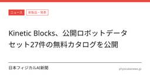
Kinetic Blocks、公開ロボットデータセット27件のカタログを公開
日本フィジカルAI新聞
Kinetic Blocksが、公開済みのロボット関連データセット27件をまとめたカタログを公開したとhumanoid.guideが18日に報じた。
5時間前
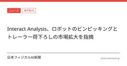
Interact Analysis、ロボットのビンピッキングとトレーラー荷下ろしの市場拡大を指摘
日本フィジカルAI新聞
Interact Analysisが、ロボットピッキング市場について新しい分析を公表した。主ソースの報道では、ビンピッキングとトレーラー荷下ろしが市場成長をけん引するとされている。詳細な数値や前提は原典側の記述に依存するため、ここでは報道事実の確認にとどめる。
6時間前
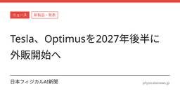
Tesla、Optimusを2027年後半に外販へ JPMorganとの工場訪問後に報道
日本フィジカルAI新聞
Teslaがヒト型ロボット「Optimus」の外部販売を2027年後半に始める見通しだと報じられた。販売前にはTeslaの施設で訓練と試験を行うとしており、次世代機Gen 3の生産準備も進めるという。JPMorganのアナリストがFremontの工場を訪れた後に伝えられた内容で、Teslaの物理世界向けAI戦略の一部と位置づけられている。
6時間前
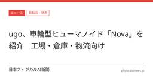
ugo、車輪型ヒューマノイド「Nova」を紹介 工場・倉庫・物流向け
日本フィジカルAI新聞
ugo, Inc.の車輪型ヒューマノイド「Nova」が紹介された。工場、倉庫、物流環境での作業を想定し、移動台車に両腕と腰部を組み合わせた構成だ。詳細な評価や導入条件は原典の範囲では限られており、仕様の意味づけが焦点になる。
6時間前
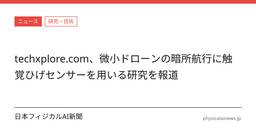
techxplore.com、微小ドローンの暗所航行に触覚ひげセンサーを用いる研究を報道
日本フィジカルAI新聞
techxplore.comは2026年9月18日、微小ドローンが暗所で触覚を使って進める研究を報じた。対象は100グラム未満の機体で、視界不良環境での航行を想定している。詳細は原典を参照されたい。
6時間前
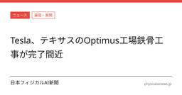
Tesla、テキサスのOptimus工場鉄骨工事が完了間近
日本フィジカルAI新聞
humanoid.guideは2026年9月19日、「Tesla、テキサスのOptimus工場鉄骨工事が完了間近」と報じた。
6時間前
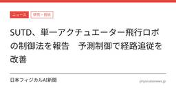
SUTD、単一アクチュエーター飛行ロボの制御法を報告 予測制御で経路追従を改善
日本フィジカルAI新聞
シンガポール工科デザイン大学の研究者が、単一アクチュエーターで飛ぶロボットの制御法を報じた。
6時間前
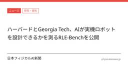
ハーバードとGeorgia Tech、AIが実機ロボットを設計できるかを測るRLE-Benchを公開
日本フィジカルAI新聞
ベンチマークは48の課題で構成され、制御、方策開発、知覚・推定、機械設計を扱う。シミュレーション上のコード生成だけでなく、質量、トルク、幾何、安定性といった物理制約を踏まえた判断ができるかを試す設計である。
6時間前
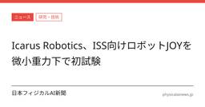
Icarus Robotics、ISS向けロボットJOYを微小重力下で初試験
日本フィジカルAI新聞
Icarus Roboticsは、ISS向けの自由飛行ロボットJOYを4回のパラボリック飛行で試験したとThe Robot Reportが伝えた。合計66回の放物線飛行で、約2分間の無重量状態を確認したという。
6時間前
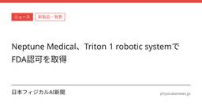
Neptune Medical、Triton 1 robotic systemでFDA認可を取得
日本フィジカルAI新聞
Neptune Medical Inc.はTriton 1 SystemについてFDA認可を得たと発表した。対象は柔軟内視鏡と、結腸全域での診断・治療手技である。同社は、同システムが結腸内視鏡の安定性や操作性を補い、EMRやESDにも使えるとしている。一方で、実装の細部や次世代機への反映はまだ進行中であり、詳細は原典の確認が必要である。
6時間前
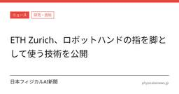
ETH Zurich、ロボットハンドの指を脚として使う技術を公開
日本フィジカルAI新聞
スイス連邦工科大学チューリヒ校のSoft Robotics Labが、ロボットハンドの指を脚のように使って移動する技術を公表した。
10時間前
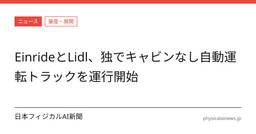
EinrideとLidl、ドイツでキャブレス自律トラックを公道運行
日本フィジカルAI新聞
EinrideとLidlは、ドイツでキャブのない自律走行トラックを公道上の定期運行に投入したと発表した。この車両はKBAの正式許可を受け、Lidlの配送センターと店舗の間で貨物を運ぶ。初期路線は多地点配送網への拡張が計画され、Schwarz Groupの他部門への展開も協議中である。
12時間前
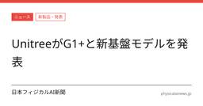
UnitreeがG1+と新基盤モデルを発表
日本フィジカルAI新聞
Unitreeは9月14日に人型ロボットG1+を発表し、感知と運動の機能を更新したと伝えた。あわせて、新世代の汎用人型ロボット基盤モデルUnifoLM-WLA-1.0も公表した。
16時間前
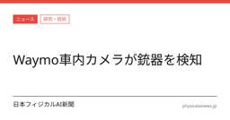
Waymoのロボタクシー、車内カメラでライフルを検知 警察に通報
日本フィジカルAI新聞
Waymoのロボタクシーで、車内カメラが銃器らしき対象を検知し、同社が警察に通報した。報道によると、2026年9月3日未明に米サンフランシスコで発生し、2人の未成年者が拘束された。車内監視の有効性が示された一方、プライバシーをどう扱うかが改めて論点になっている。
18時間前
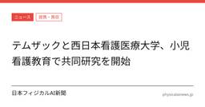
テムザックと西日本看護医療大学、小児看護教育で共同研究を開始
日本フィジカルAI新聞
prtimes.jpは2026年9月17日、「テムザックと西日本看護医療大学、小児看護教育で共同研究を開始」と報じた。
21時間前
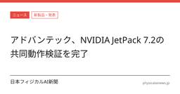
アドバンテック、JetPack 7.2の検証完了を発表
日本フィジカルAI新聞
アドバンテックは、カメラエコシステムパートナー各社との協業で、MIC-AIおよびMIBシリーズ上のNVIDIA JetPack 7.2の動作検証を完了したと発表した。
1日前
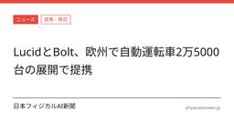
LucidとBolt、欧州で自動運転車2万5000台の展開で提携
日本フィジカルAI新聞
LucidとBoltは9月17日、欧州で少なくとも2万5000台の自動運転Lucid車を展開する提携を発表した。対象はLucidの今後のMidsizeプラットフォームで、SAEレベル4の自動運転向けに開発する。Boltは2035年までに自社プラットフォーム上で10万台の自動運転車を目指しており、今回の提携はその一段階と位置づけられる。
1日前
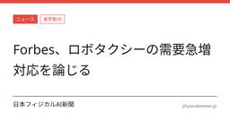
Forbes、ロボタクシーの需要急増対応を論じる
日本フィジカルAI新聞
Forbesが2026年9月18日付で、ロボタクシーが需要急増にどう対応するかを論じた。公開された見出しと短い説明からは、ピーク時の需要処理が論点であることが分かる。詳細な論旨は原典本文を確認する必要がある。
1日前
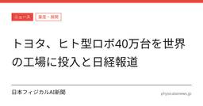
トヨタ、ヒト型ロボ40万台を世界の工場に投入と日経報道
日本フィジカルAI新聞
日本経済新聞が、トヨタ自動車が自社開発のヒト型ロボット40万台を世界の工場に投入すると報じた。関連する詳細な仕様や導入時期は、提示された抜粋だけでは確認できない。本件は、トヨタのロボット開発を工場運用に結びつける動きとして読む余地がある。
1日前
Forbes、ウクライナのロボット戦の拡大を報道
日本フィジカルAI新聞
Forbesが、ウクライナのロボット戦を「一桁増の規模」に拡大する動きを報じた。原典はインタビュー/論説であり、報じられたという事実以外の具体策は本文では確認できない。詳細は原典を参照する必要がある。
1日前
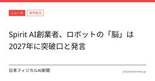
Spirit AI創業者、ロボットの「脳」は2027年に突破口と発言
日本フィジカルAI新聞
Spirit AIの創業者は、ロボットの「脳」を巡る技術で2027年に突破口が来るとの見方を示した。発言はロボット本体ではなく、認識・判断・制御を担う中核ソフト／モデル層に焦点がある。実装時期の見通しを示した発言であり、量産や商用化の条件はなお別途確認が必要である。
1日前